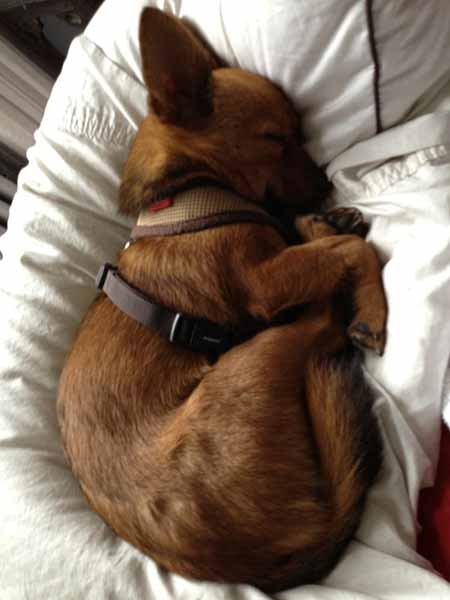

Donald Judd’s Paintings (pdf)
from Donald Judd: Paintings (Miami: Institute of Contemporary Art, 2019)
from Donald Judd: Paintings (Miami: Institute of Contemporary Art, 2019)
I feel like a need a little disclaimer around the following piece. I’ve gotten shit on twitter because I supposedly misgendered Storme. I only took gender cues from quotes she gave in a variety of pieces I found on the internet so Storme may have been shifting gender themself at that time. I don’t know. But I have no investment in making Storme transgender when Storme is a dyke or vice versa.
Harper’s, 2019
Artforum, 2019
from Jess Perlitz monograph, 2020
Out Magazine, 2017
from What a Slight. What a Sound. What a Universal Shudder: Eve Fowler (Scotland: Dundee Contemporary Arts, Summer 2018)
from “The Enigmatic Message: Kubrick Chimp Transcriptions,” Beyond 2001 (London: Sarah Wood, 2018)
from A Public Character: Shannon Ebner (Miami: Institute of Contemporary Art, 2016)
The Paris Review, 2017
The hard-wearing tote features a quote from Inferno (a poet’s novel), printed black on natural, 100% recycled cotton. Measures 13" w x 14" h x 3" d.
Available from OR Books.
Copyright © 2020 Eileen Myles